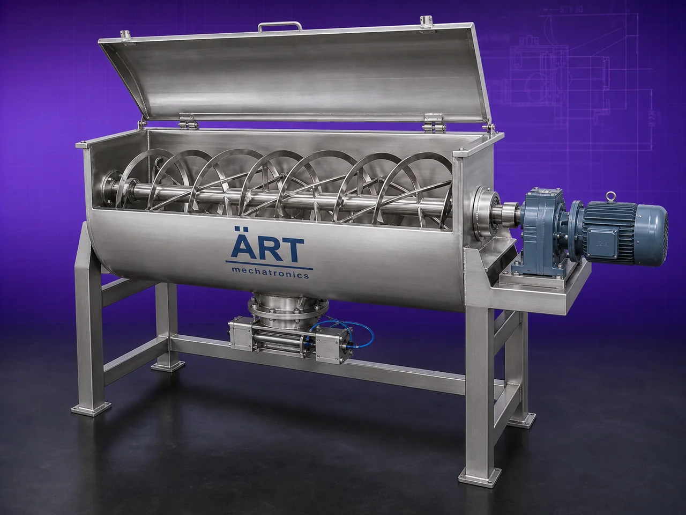

Ribbon Blender Machine (Industrial Ribbon Mixer for Powder & Granule Mixing Applications)
A Ribbon Blender Machine, also known as a Ribbon Mixer or Industrial Powder Blender, is one of the most widely used industrial mixing machines designed for uniform blending of powders, granules, spices, chemicals, food ingredients, nutraceuticals, and dry materials.

About the Ribbon Mixer
The machine uses a specially designed double helical ribbon agitator mounted inside a U-shaped horizontal mixing chamber, which creates both radial and lateral movement of materials, ensuring fast, homogeneous, and lump-free mixing.
Ribbon blenders are extensively used in industries such as food processing, pan masala, spices, pharmaceuticals, nutraceuticals, chemicals, detergents, cosmetics, cattle feed, agro products, and powder processing industries, where consistent product quality and uniform mixing are critical.
ART Mechatronics offers high-efficiency ribbon blender machines, engineered for fast mixing, low power consumption, hygienic processing, and reliable industrial operation.
One machine, many names
Buyers search for this equipment under many terms — we manufacture all of them:
Working Principle of Ribbon Blender Machine
Creates fast and uniform mixing action
Types of Ribbon Blender Machines
Industries Using Ribbon Blender Machine
🌿 Pan Masala & Tobacco Industry
- Supari mixing
- Flavor blending
- Powder mixing
🌶️ Spice Industry
- Masala blending
- Seasoning mixing
🍃 Food Processing Industry
- Flour, premix, powders
💊 Pharmaceutical Industry
- Powder blending
- Nutraceutical mixing
⚗️ Chemical Industry
- Chemical powder mixing
🧼 Detergent Industry
- Powder detergent blending
🐄 Cattle Feed Industry
- Feed mixing
💄 Cosmetic Industry
- Cosmetic powder blending
Features & Advantages
- Fast and uniform mixing
- Homogeneous powder blending
- Suitable for powders and granules
- Low power consumption
- Hygienic and easy-to-clean design
- Heavy-duty industrial construction
- Optional liquid spraying arrangement
- Low maintenance operation
- High production efficiency
Technical Highlights
- Capacity: Small lab scale to large industrial batches
- Mixing Type: Horizontal ribbon mixing
- Construction: Stainless Steel / Mild Steel
- Agitator Type: Double helical ribbon
- Discharge: Pneumatic / Manual valve
- Operation: Automatic / Semi-automatic
- Drive: Motor with gearbox
Turnkey Mixing Solutions
ART Mechatronics offers:
- Complete ribbon blender system design
- Feeding and discharge automation
- Liquid spraying systems
- Dust collection integration
- Installation & commissioning
- After-sales service & AMC
Why Choose Art Mechatronics
- Expertise in industrial mixing systems
- Specialized solutions for powder industries
- High-performance and durable machines
- Hygienic and efficient designs
- Proven industrial performance across sectors
Applications
- Pan Masala Manufacturing Plants
- Spice Processing Units
- Food Processing Plants
- Pharmaceutical Manufacturing Units
- Chemical Industries
- Detergent Manufacturing Units
- Cosmetic Processing Plants
Industries that use the Ribbon Mixer
Related Mixing & Blending machines
Get pricing & specs for the Ribbon Mixer
Share the product, target capacity, current process and plant location. These details help our engineers discuss the right machine or line configuration.
One partner, from design to start-up
ART Mechatronics designs, manufactures, installs and commissions your Ribbon Mixer solution with regional presence in India, UAE and Thailand.